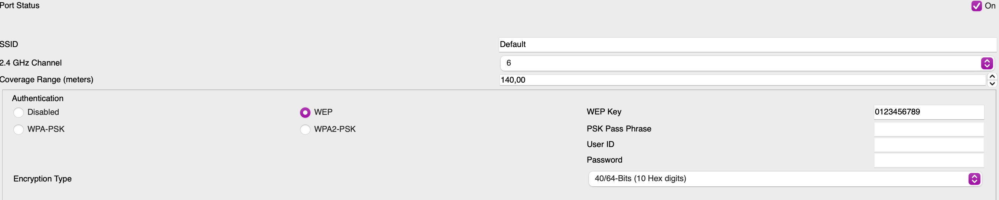
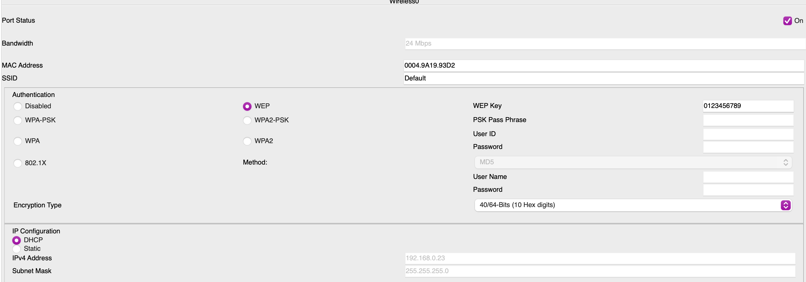
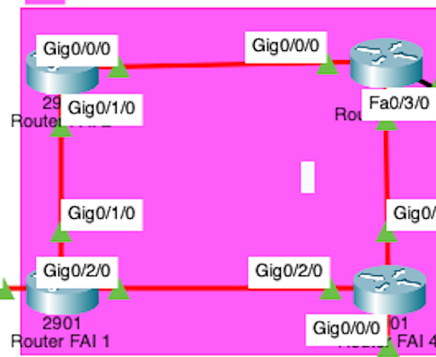
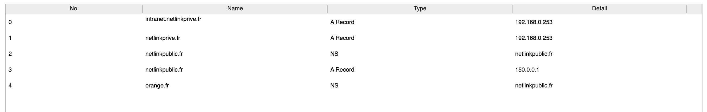
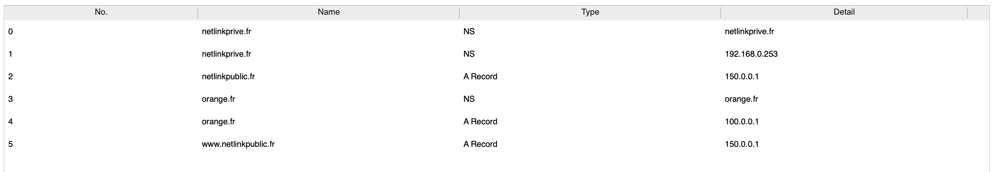

Contexte
Le projet consistait à mettre en place un réseau sécurisé pour une PME avec des services essentiels comme DHCP et DNS. Tous les ordinateurs de l'entreprise doivent pouvoir accéder à Internet, avec une contrainte particulière : l'utilisation simultanée d’un DNS privé et d’un DNS public. Le réseau devait permettre la navigation via des liens HTTP, prouvant ainsi le bon fonctionnement de la résolution de noms.
Qu'est-ce que Cisco Packet Tracer ?
Cisco Packet Tracer est un logiciel d’apprentissage interactif conçu pour modéliser le comportement des réseaux informatiques, incluant les routeurs, commutateurs, points d’accès, pare-feux, ordinateurs, serveurs, et bien d’autres équipements. Il propose une interface graphique intuitive qui facilite la conception de topologies réseau et la simulation du trafic et des protocoles (tels qu’OSPF, RIP, EIGRP, DHCP, etc.).
Comment ça fonctionne ?
Le réseau est fonctionnel comme dans une entreprise réelle : les postes clients peuvent accéder à un serveur public, un serveur privé de l’entreprise, ainsi qu’au serveur du fournisseur d'accès (Orange dans ce cas).
Illustration du projet

Explications techniques du projet
Outils utilisés
- Cisco Packet Tracer
- Routeurs & Commutateurs Cisco
- DNS, DHCP
- Serveurs HTTP
Fonctionnalités mises en place
- Accès Internet pour tous les postes
- Résolution DNS publique et privée
- Serveur DHCP centralisé
- Architecture sécurisée
Résultat
Le réseau respecte les contraintes demandées : navigation via noms de domaine, isolation des services internes, et accès sécurisé à Internet.
Service DHCP et switches
Le service DHCP
Le service DHCP était une des contraintes à respecter pour l'adressage IP de l'entreprise. Une partie des ordinateurs devait être adressée automatiquement. Voici un focus sur cette partie :
Le switch wifi
Nous avons vu précédemment qu'une partie des ordinateurs connectés via DHCP sont en wifi. Cette fonction a été mise en place pour simplifier l’accès réseau des ordinateurs portables. Pour cela, un switch wifi a été utilisé avec un mot de passe sécurisé.
Configuration des ordinateurs
Voici les paramètres des ordinateurs avec leur adresse ip automatiquement configurée en DHCP et le mot de passe déjà entré pour que chaque ordinateur puisse se connecter au réseau.
les Switches en RJ 45
afin de connecter tous les ordinateurs de l'entreprise au routeur facilement, on a disposé des switches pour démultiplier le nombre de ports disponibles pour accueillir les stations de travaildu personnel. Ces switches sont programmés pour faire du Spanning-Tree.

définition du Spanning-Tree
Le Spanning Tree Protocol (STP) est un protocole réseau utilisé pour empêcher les boucles dans un réseau Ethernet comportant plusieurs switches. Il désactive automatiquement certains liens redondants pour créer une topologie sans boucle. STP choisit un switch racine et calcule les chemins les plus ourts vers celui-ci, bloquant les autres liens pour éviter les tempêtes de broadcast et les doublons.
pourquoi mettre plusieurs switches en redondance ?
Mettre plusieurs switches en redondance permet de garantir la continuité du réseau en cas de panne. Si un switch ou un lien tombe en panne, le trafic peut automatiquement passer par un autre chemin grâce à la redondance. Cela améliore la tolérance aux pannes, la disponibilité du réseau et assure un meilleur débit en répartissant la charge sur plusieurs liens lorsque STP ou ses variantes le permettent.

Explications du routage au sein de l'entrepris et du FAI
Le routage
pour que le personnel de l'entreprise puisse joindre le fournisseur d'accès à internet il faut que les paquets soient envoyés au bon endroit et que tous les routeurs se comprennent entre eux. Pour cela, il a été choisi de mettre en place le protocole OSPF car il est plus simple à mettre en oeuvre pour les entreprises comprennant beaucoup de routeurs. Il évite de mettre beaucoup de routes statiques et est plus évolutif, ce qui est primordial pour l'entreprise. Il permet de pouvoir s'adapter à l'arrivée d' un nouveau routeur sans modifier la configuration de tous les routeurs. Voici la configuration pour un routeur de mon réseau :

définition de OSPF
OSPF (Open Shortest Path First) est un protocole de routage dynamique à état de lien utilisé dans les réseaux IP. Il permet aux routeurs d’échanger des informations sur la topologie du réseau pour calculer le chemin le plus court vers chaque destination, en utilisant l’algorithme de Dijkstra. OSPF est un protocole interne (IGP), rapide, évolutif et adapté aux réseaux de taille moyenne à grande. Il divise le réseau en zones hiérarchiques (dont une zone backbone appelée area 0), ce qui permet d’optimiser les performances et la gestion du routage.
expemple de OSPF pour le FAI
Comme dit précedemment, il a été mis en place un système de routage dynamique pour le FAI et l'entreprise et en voici une illustration pour le FAI :
Le role de OSPF pour notre FAI
Dans notre réseau de fournisseur d’accès à Internet (FAI) de grande échelle comme Orange, OSPF ( Open Shortest Path First) sert de protocole IGP pour orchestrer le routage interne au sein de l’Autonomous System. Contrairement au protocole de bord BGP qui échange les routes entre systèmes autonomes, OSPF gère la découverte dynamique des chemins à l’intérieur du réseau de l’opérateur
La résolution de nom et les serveurs web
les serveurs DNS
Dans le réseau de notre entreprise, nous avons un système de DNS qui permettent de trouver les serveurs où
sont hébergés les sites sans avoir à retenir leurs adresses IP. Cela permet aux personnel de l'entreprise de
pouvoir accéder facilement au serveur en local. Nous avons un DNS privé et un DNS public qui ont des tables DNS
qui permettent de trouver l'un ou l'autre via n'importe quelle machine de l'entreprise.
je vous ai mis ci-dessous une illustration des DNS privés et publics :

définition de DNS
Le DNS (Domain Name System) est un système qui permet de traduire les noms de domaine lisibles par les
humains (comme www.orange.com) en adresses IP compréhensibles par les machines (comme 100.0.0.1).
Il fonctionne comme un annuaire d’Internet : lorsqu’un utilisateur tape une adresse web, le DNS interroge
différents serveurs pour trouver l’adresse IP correspondante, afin que l’ordinateur puisse se connecter au
bon serveur.
Le DNS est essentiel au fonctionnement d’Internet, car il évite d’avoir à mémoriser des adresses IP complexes
pour accéder aux sites web ou aux services en ligne.
pourquoi mettre deux DNS dans l'entreprise ?
Pour un meilleur fonctionnement de l'entreprise on a choisi de mettre deux serveurs DNS pour plusieurs
raisons :
Premièrement, cela permet que le personnel de l'entreprise qui est connecté en permanence au dns privé
ne vienne pas encombrer le serveur DNS public de requêtes.
Deuxièmement, cela permet qui si un des deux serveurs DNS tombe en panne, le personnel puisse encore avoir
accès au site de l'entreprise.
Pour finir, c'est aussi pour des raisons de sécurité parce-que si on a seulement un serveur DNS public,
dess personnes mal intentionnées pourraient avoir accès à des informations privées qui sont indiquées
par le DNS privé.
Qui serai suceptible d'attaquer un DNS ?
1. Hackers ou cybercriminels
exemple : rediriger un utilisateur vers un faux site bancaire pour voler ses identifiants.
2. Groupes de pirates organisés
But : mener des attaques de plus grande ampleur (cyberterrorisme, guerre numérique).
Méthodes : attaques DDoS massives contre des serveurs DNS critiques (ex. : attaque contre Dyn en 2016).
Le DNS privé
voici les informations qui ont été entrées dans la table de mon DNS privé pou pouvoir joindre le DNS public et le DNS du FAI :
Le DNS public
Maintenant que vous avez vu la table du serveur DNS privé, je vais vous montrer celle du serveur DNS public qui est quasiment identique :
